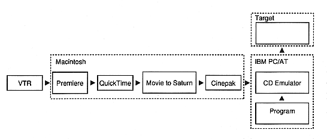
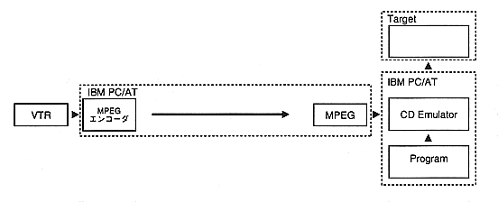
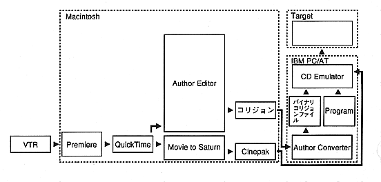

Return to previous page ｜ Return to menu ｜ Go to next page
-
3. Development Overview
-
Data compression
- In title production using video, data compression is the key. In Saturn, Cinepak and MPEG systems can be used.
-
Development flow
- Below is a development system diagram for each authoring tool.
Details are described in the manual of each tool.
Cinepak

MPEG

-
AuthorEditor + AuthorConverter + Cinepak

Return to previous page ｜ Return to menu ｜ Go to next page